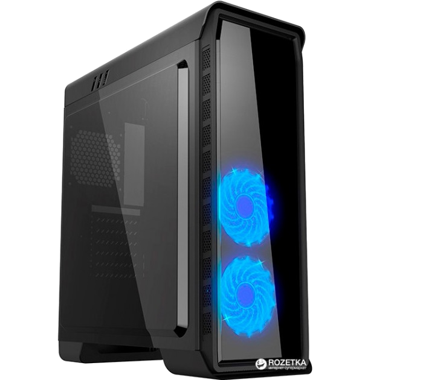
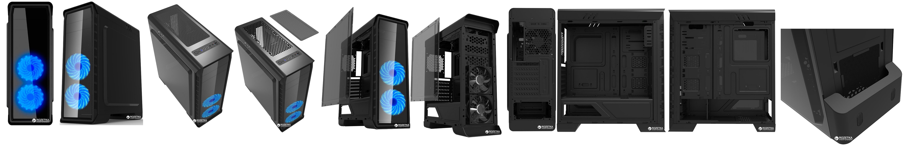

Быстраня навигация по товару:
GameMax Elysium

Описание:
Корпус Elysium от GameMax — это современный корпус формата Mini-Tower.
Отличается хорошо продуманным дизайном, благодаря которому значительно облегчается установка системных
компонентов и поддерживается оптимальный температурный режим для их эффективного функционирования.
Корпус имеет достаточное пространство для сборки на его основе высокопроизводительной системы.
Технические характеристика товара:
-
Корпус:
GameMax Elysium Black
-
Код производителя:
Elysium Black
-
Мощность блока питания:
Нет
-
Материал корпуса:
Сталь SPCC 0.5 мм
-
Форм-фактор материнской платы:
-
Тип корпуса:
Minitower
-
Охлаждение:
- Установленное:Спереди: 2 x 120 мм (синяя подсветка)
-
Опционально: Спереди: 3 x 120 мм.
Сверху: 2 x 120 мм.
Снизу: 1 x 80 / 92 / 120 мм.
-
Дополнительно
Безрамочная прозрачная стенка, оргстекло
-
Передняя панель:
- 1 USB 3.0
- 2 USB 2.0
- 1 аудиовыход
- 1 вход для микрофона
-
Размеры:
185 х 400 х 480 мм
-
Вес:
4.7 кг
-
Максимальная высота кулера ЦП:
170
-
Максимальная длина видеокарты:
360 мм
-
Гарантия:
24 месяца
Подробное описание товара
Корпус обладает рядом важных особенностей: прекрасным обдувом, совместимостью по размерам с практически
всеми современными материнскими платами и видеокартами, а также поддержкой интерфейса USB 3.0.
Вмещает видеокарты до 360 мм длиной и кулер ЦП высотой до 170 мм.

Также рекомендуем к данному товару